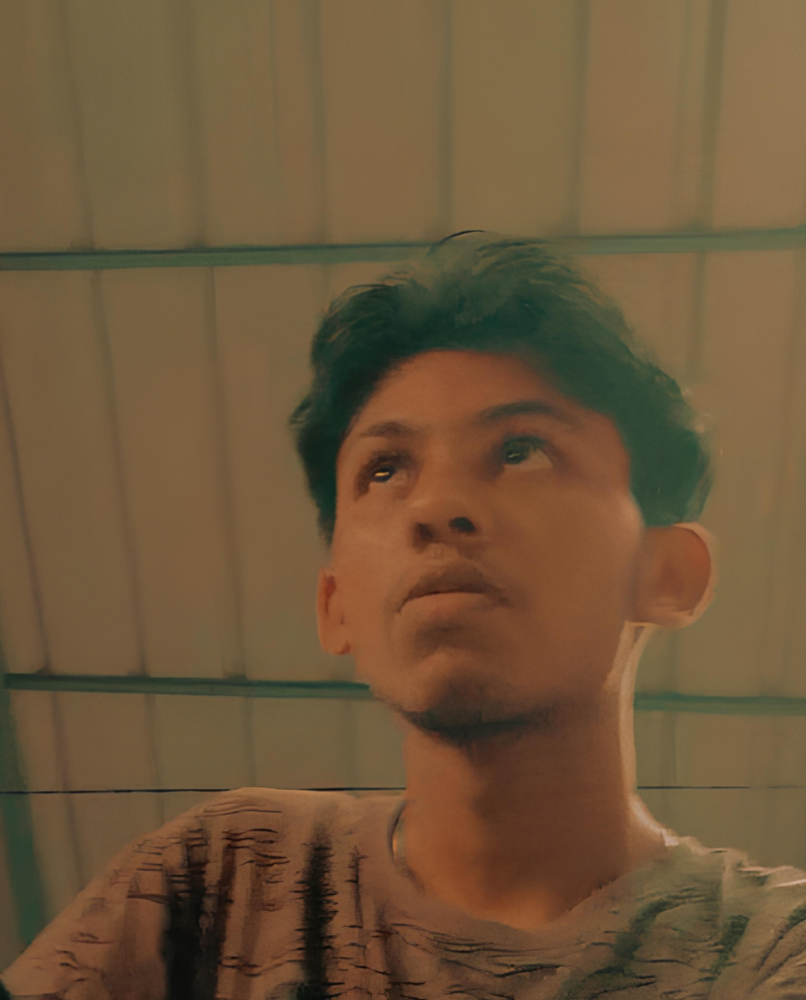

Abhijith R
|
About Me
Hello! I'm Abhijith, a tinkerer passionate about the intersection of coding, electronics, and design. From diving into art and music to experimenting with new technologies, I love exploring creative ideas and bringing engaging digital experiences to life. My aim is to leverage technology to build interactive and meaningful projects, always striving for innovation and a touch of fun.
View My CVMy Skillset
Here are some of the technologies and tools I enjoy working with:
HTML5
CSS3
JavaScript (ES6+)
React
Node.js
Express
MongoDB
Python
Arduino
Raspberry Pi
Git & GitHub
UI/UX Design
Figma
Blender
Featured Projects
A selection of projects from my GitHub profile.
Loading repositories...
Get In Touch
Interested in collaborating or have a question? Feel free to reach out!
Email: abhijithxr@gmail.com